This week, I began considering my project options for the semester: either continue my controller project
from last semester or start something new. The controller is already at a finished prototype stage, so
continuing would mainly involve tweaking and improvements, likely resulting in a polished final product.
However, this would also mean spending most of my time fixing small issues without much satisfaction,
since the result wouldn't feel very different from what I already created. I decided to make a brand new
project.
When coming up with ideas, I liked the idea of making something modular. I had a simple task to complete. I could start with a very basic design that achieves the objective to the core. Still, I would further improve my creation by adding more modules. It should allow me to make something I'm happy with, regardless of the time I have to spend on it, and would give me more flexibility in my project.
I was fond of the idea of making a Lego sorter, as it perfectly fits my modular approach. At its most basic level, it could use Arduino with a colour sensor to identify block colours. A step further would be using a Raspberry Pi with a camera, which would allow me to detect multiple blocks at once and potentially use artificial intelligence to recognise block types rather than just colour. From there, I could expand its efficiency by adding features such as moving blocks into sorted containers or even designing a mechanism to grab pieces directly from a tub, eliminating manual placement.
Before starting any physical work on my project, I wanted to plan the design of my LEGO sorter. I sketched designs on my tablet, focusing on how the blocks could move through the system and the overall layout of the sorter. I could split my project into three parts, pick up the module that will have lots of blocks, just in a tub with the ability to move just one piece onto the next part, which is the scanner which will be able too detect the lego block so that the final part the sorter can move the block into the correct container depending on what was scanned. I decided to split my project into three parts. The first is the pickup module, which takes blocks from a tub and moves one piece at a time onto the next stage; the second is the scanner, which detects the LEGO block. The third is the sorter, which places the block into the correct cibtuber based on the scan. The most important part is the scanner, so I plan to start with that. The pickup and sorter modules can be added later.
Pick up
For the pick-up module, the objective is to take a pile of LEGO blocks and separate them so they can fall onto the scanner conveyor one at a time. There are various methods to achieve this, with the most straightforward being the use of a funnel. However, there are many different designs for a funnel, each with its pros and cons.
The first design is a simple cylindrical funnel, as shown below:

While this design works well for liquids, it is quite prone to jamming when used with solid blocks.
Another funnel design is illustrated below:

This design improves upon the previous one because it allows the blocks to slide along a flat surface. However, the risk of jamming still exists, especially if two blocks try to exit simultaneously.
The next design addresses the jamming issue by ensuring that the entrance and exit of the funnel are the same size. However, this design may struggle with blocks not sliding off. This issue can be resolved by incorporating an agitator, such as a vibrator, to help shake blocks through the funnel.
While the funnel design presents a good concept, even if there is a way to prevent jamming, there remains the challenge of controlling the rate at which the blocks pass through the system. Consequently, the blocks can move onto a cleated conveyor.

The design features two ponds next to each other on the conveyor, allowing only one block to be picked up at a time. However, it only accommodates blocks of a certan size; too small blocks may fall through, while too large ones may not be held properly.
Sorter
The sorter aims to move specific blocks of choice into different containers based on the scan results. To accomplish this, a wheel of containers can be attached to a stepper motor, allowing the correct container to be spun and positioned underneath the conveyor belt, as shown in the image below.
This design does not meet the goal of the sorter, but spinning all con containers can pose a problem, especially if I want to make the sorter faster and moving that amount of mass can be troublesome. Instead of moving everything, how about only moving the rap?
The ramp’s movement reduces the number of moving parts, but it limits the storage capacity for containers. In this case, the choice of design depends on what best addresses my specific problem, not just on which one is overall better.
Looking back on the design and planning for my LEGO sorter, it’s clear that finding the right balance between being creative and staying practical is key. Im excited about how modular and complex the project can be, but I also see that I need to keep each part simple to make sure everything works smoothly. This process has taught me that it is beneficial to have a clear plan in place before advancing in the project.